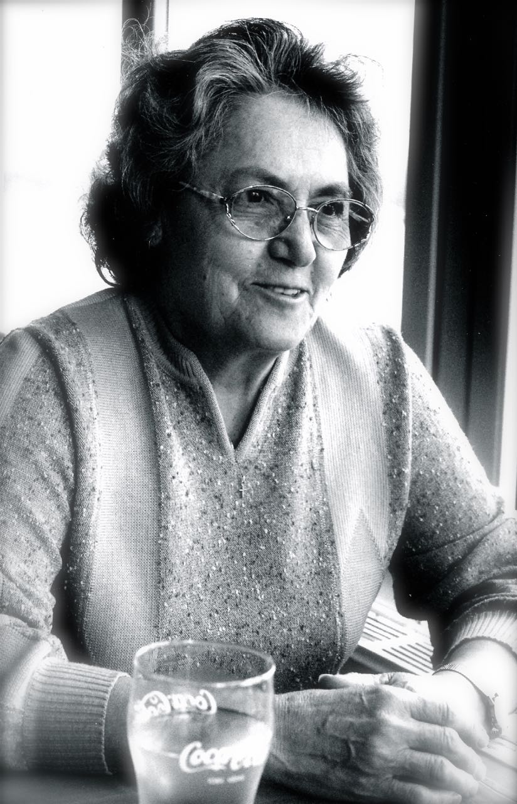

| 
|
Tisztelt Gyászoló család Tisztelt jelenlévők! ... Életének 77. évében Fleischmann Györgyné, Zsuzsa néni távozott közülünk. Élete itt Mohácson kezdődött 1937. szeptember 7-én. Egyszerű családba született, szülei két gyermeket neveltek Zsuzsannát és testvérét Ferencet. Sajnos nagyon korán meg kellett tudnia, hogy az élet nem csak gondtalan pillanatok sora. Édesapja a háborúban meghalt, Édesanyja, később nevelőapjával, próbálta összetartani és eltartani a családot. Zsuzsa néni gyermekéveit itt a városban töltötte, a mohácsi leányiskolában végezte el a 8 osztályt, majd munka mellett középkokú közgazdasági végzettséget szerzett, mindig jól tanult. Sajnos körülményeik nem engedték meg, hogy egyetemen/főiskolán tanuljon tovább. Korán dolgozni kezdett, a Füszértnél, majd a Temaforg vállalatnál, és végül a Kesztyűs szövetkezetnél. Egy rosszul sikerült házasság után a hatvanas években talált rá igaz szerelmére és egy életre szóló társára, ekkor ismerkedett meg Fleischmann Györggyel, akivel 1969. január 20-án Dunaszekcsőn hivatalosan is összekötötték életüket. Az, hogy megtalálta igaz párját, mi sem bizonyítja jobban, mint hogy 45 évet töltöttek együtt boldogan. Házasságukból egy fiúgyermek született: György. Zsuzsa néni első házasságából is hozott egy fiú gyermeket: Istvánt, aki az új családban talált új otthonra. Fiai révén négy unokának lehetett boldog nagymamája, Ők Szandra, Patrícia, Anna és Gergő. Fiaival és családjukkal is szeretetteljes, szoros kapcsolata volt. Családja elmondása szerint Zsuzsa néni nem ült sosem tétlenül. Ha akadt szabadideje szívesen kézimunkázott, kötött,horgolt, varrt, szívesen tanult nyelveket: németet és eszperantót.. Ha lehetősége adódott szívesen utazgatott. Szeretett családja körében lenni, és kedvükre tenni. Zsuzsa néni soha nem engedte meg magának, hogy gyengének lássák. Élete során azon szerencsések közé tartozott, akik nem betegeskedtek sokat. Természetesen őt sem kerülték el a kisebb lefolyású betegségek és sérülések. Ettől még hosszú évekig élhetett volna. Azonban 8 évvel ezelőtt az egyik leg alattomosabb betegség, Alzheimer kór támadta meg. Betegsége alatt otthonában férje ápolta, István fia segítette. Nagy segítség volt még fia barátja Robi, aki ápolóként szakszerűen tudta ellátni és sokat segített az esti fürdetések során. De sajnos hiába volt minden ápolás és segítség, 2014. március 8-án legyengült szervezete végleg feladta a harcot, és a mohácsi kórházban örökre lehunyta szemét. Most fájó szívvel búcsúznak el tőle szerettei. Szerető Férje, Gyermekei és családjuk, menyei Katalin és Hajni, anyósa, sógornői, ismerősök, barátok, egykori munkatársak és szomszédok... ... Zsuzsa néni nyugodjon békében! |